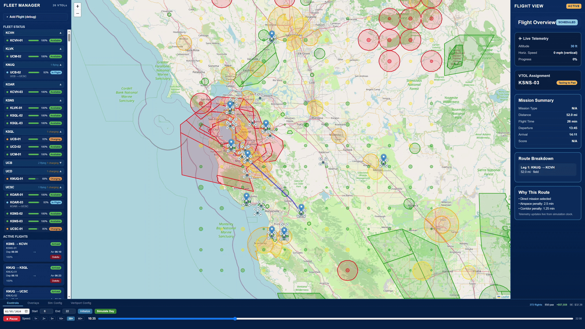
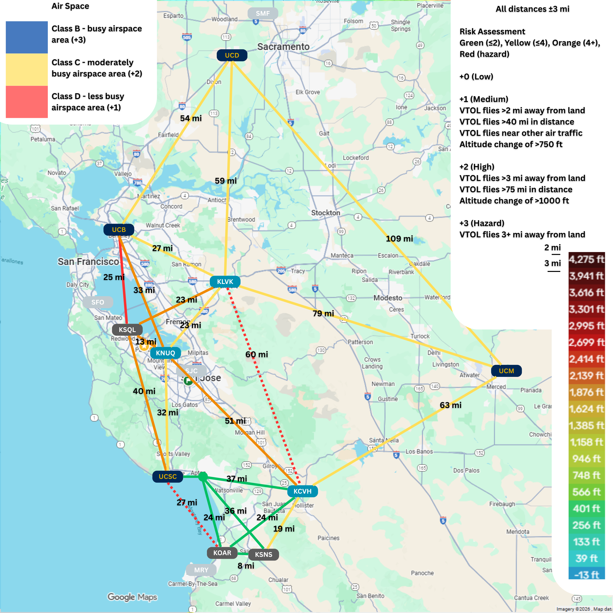
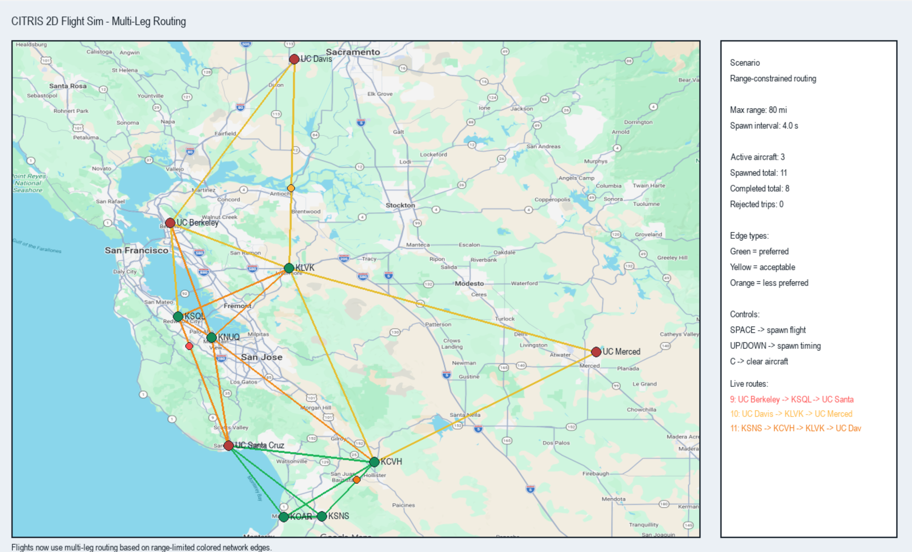
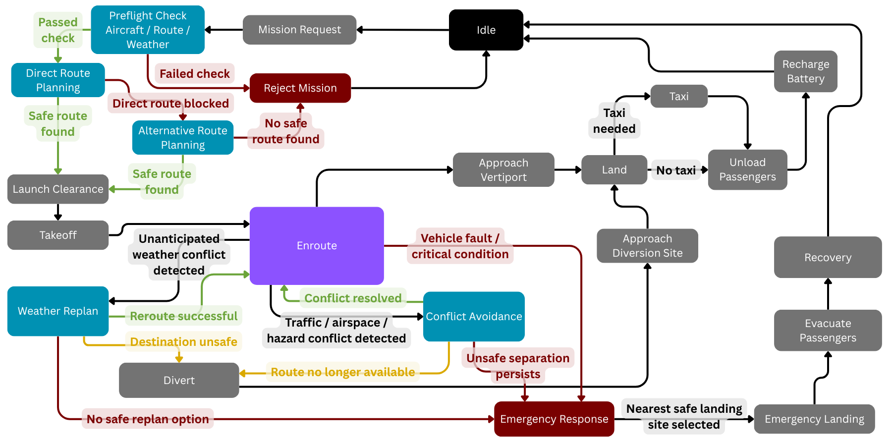
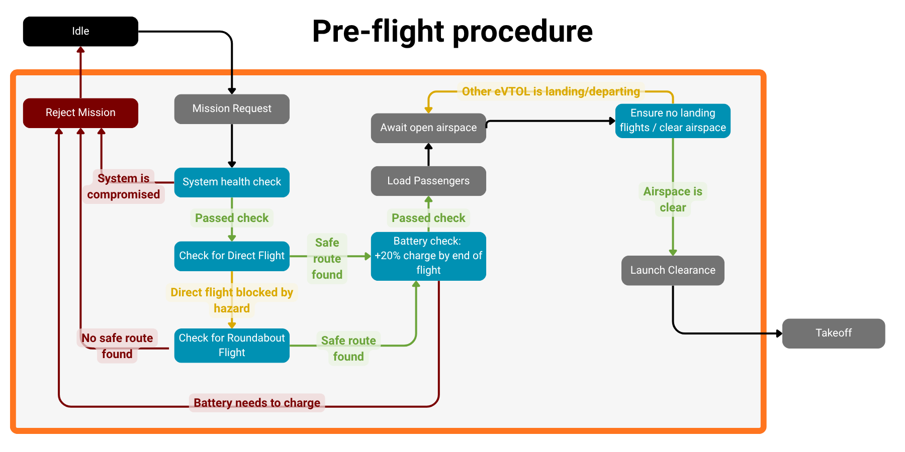
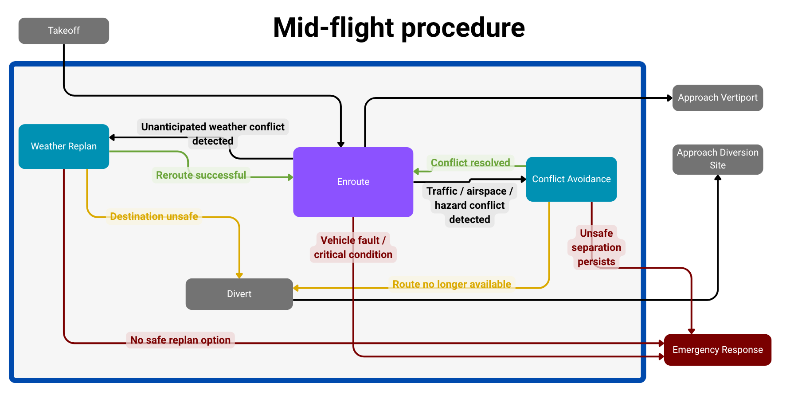
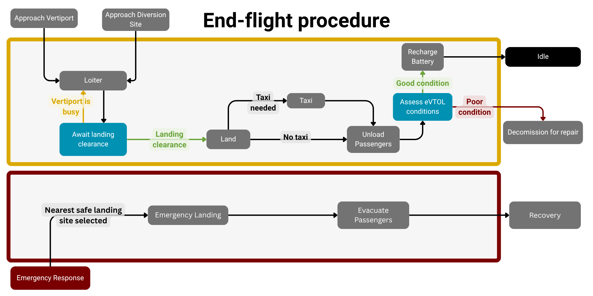

03 / Software / Simulation
CITRIS eVTOL Routing & Simulation System
Graph-based routing and simulation for eVTOL operations under weather, airspace, hazard, population, and range constraints.

THE SYSTEM
Overview
The Airlink concept investigated a distributed eVTOL network connecting UC campuses and regional transportation nodes across Northern California. My primary responsibility was developing the simulation framework used to explore how that network would operate.
The simulator connects routing with mission acceptance, aircraft range, fleet availability, environmental constraints, and network performance. It supports evaluation of infrastructure and operating decisions beyond shortest-path routing alone.
TEAM LEAD / PRIMARY SIMULATION DEVELOPER
My contributions
I led the team and technical direction, designed the operational state machine, and wrote the simulation software. The wider proposal and infrastructure and economic research were a team effort.
- Led candidate vertiport and network-site evaluation.
- Built graph construction, route search, multi-leg planning, and environmental data integration.
- Developed the Python/FastAPI backend and React/Leaflet fleet interface.
- Implemented fleet, mission, simulation-time, cost, and performance modeling.
- Integrated the simulation subsystems with the operational architecture.
SELECTED DEVELOPMENT WORK
Simulation development
ROUTING & MAP EVALUATION
Environmental constraints
Weather, airspace, terrain, population exposure, and hazard data inform route evaluation. These layers influence feasibility, graph construction, routing cost, and mission acceptance; they serve more than a visual role.
Comparing default, topographic, and airspace views made the relationship between network geometry and geographic constraints inspectable.

EARLY PROTOTYPE
Validating the network concept
The initial Python/Pygame simulation tested network representation, range-constrained connectivity, multi-leg routing, and basic aircraft spawning and simulation behavior. It provided a rapid way to evaluate the concept before integrating the full interface.
Multi-leg network planning
The router evaluates direct connectivity and can fall back to paths through intermediate nodes when necessary. Transfer and operational penalties help assess routes across the regional network within aircraft range limits.

FINAL SIMULATION INTERFACE
Fleet-level simulation
The final interface, shown at the top of this page, makes network behavior inspectable as a simulated operating day progresses. Aircraft, routes, constraints, and mission state can be examined together.
Fleet & mission state
Aircraft availability, battery state, active flights, and selected mission details.
Routes & decisions
Map overlays, route breakdowns, route-selection explanations, and departure and arrival estimates.
Simulation controls
Accelerated simulation time, operating controls, and network-level statistics.
ROUTING ARCHITECTURE
Constraint-aware routing
Northern California is represented as a weighted spatial graph connecting campus vertiports, airports, and intermediate field nodes. Distance-limited connectivity and aircraft range bound the network; a Dijkstra-based planner searches for the lowest-cost feasible route.
- Graph
- Constraint evaluation
- Route search
- Mission plan
Hard constraints
Critical feasibility or safety violations can remove candidate edges entirely. Unsafe weather, restricted areas, and range limits can prevent a route from being considered.
Soft constraints
Less desirable routes remain available with increased effective cost. Caution weather, population exposure, distance, and route geometry can steer planning toward alternative corridors.
MISSION ARCHITECTURE
Operational state machine
I designed the mission logic to connect pre-flight validation with enroute contingencies, diversion, emergency response, landing, recovery, and return to service.
Implemented scope: strategic mission planning and pre-flight routing. The broader state machine defines the operational architecture; real-time in-flight replanning and tactical conflict avoidance are planned extensions.

Pre-flight
Mission request, readiness, route feasibility, battery and range checks, launch clearance, or rejection.
Mid-flight architecture
Designed enroute logic for weather, traffic, and hazard conflicts, diversion, and emergency response.
End-flight architecture
Approach and landing clearance, unloading, aircraft assessment, recharge or maintenance, and return to service.
Emergency architecture
Emergency-response pathways, safe landing-site selection, and recovery.
Pre-flight detail

Mid-flight architecture detail

End-flight architecture detail

SOFTWARE & SYSTEMS
Technical implementation
Front end
React and Leaflet for interactive maps, fleet status, and mission visualization.
Back end & simulation
Python and FastAPI for graph construction, route search, simulation state, fleet logic, and scenario evaluation.
Data & constraints
Ingestion and processing of weather, airspace, terrain, population, and geographic hazard data.
Algorithms & modeling
Weighted graphs, Dijkstra search, hard exclusions, soft penalties, multi-leg routing, range limits, and time-based simulation.
MODELED PERFORMANCE
Simulation results
Representative average clear-day simulation results — three-pad configuration.
- Average flights completed
- 388
- Average passengers carried
- 906
- Average net daily profit
- $61,878
- Break-even ticket price
- $31.64
The three-pad configuration averaged 388 flights compared with 337 for two pads, increasing simulated throughput with a very similar break-even ticket price. Severe weather could sharply reduce operations, reinforcing the importance of environmental constraints.
These are modeled results under the proposal's operating and economic assumptions, not observed real-world performance or guaranteed business outcomes. See the proposal for assumptions and results ↗
SYSTEMS ENGINEERING
From routing to system decisions
Combining routing, fleet behavior, environmental constraints, and operating assumptions created a framework for evaluating where nodes should be located, how many pads might be needed, and how weather and infrastructure choices affect network availability and performance.
Presented as part of the 2026 CITRIS Aviation Prize to a review panel including representatives from MathWorks, NASA, and CITRIS.
FUTURE WORK
Future extensions
The current implementation focuses on strategic pre-flight routing and network simulation. Future work could add real-time in-flight replanning, tactical conflict avoidance, higher-demand congestion testing, expanded fleet behavior, and deeper demand and scenario calibration.